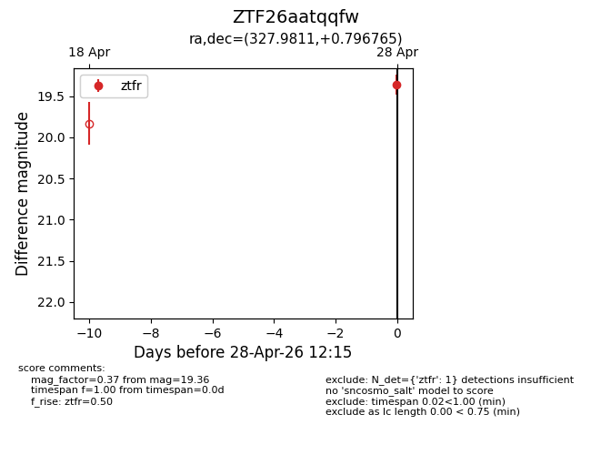
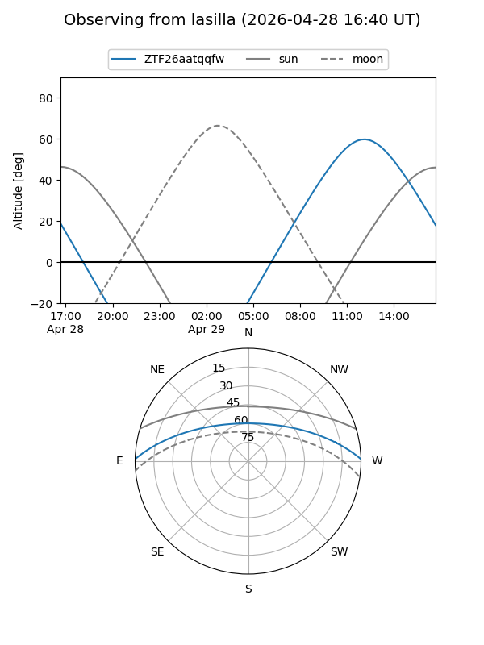
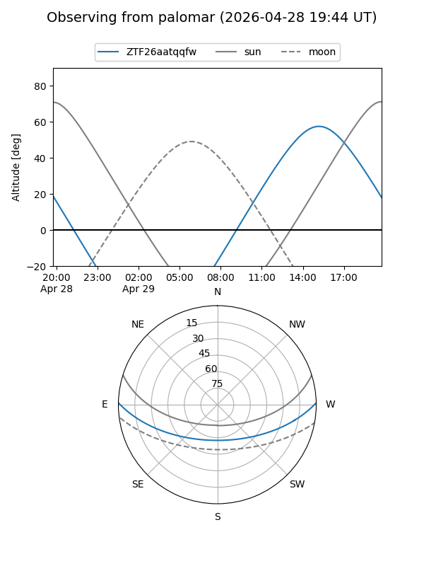
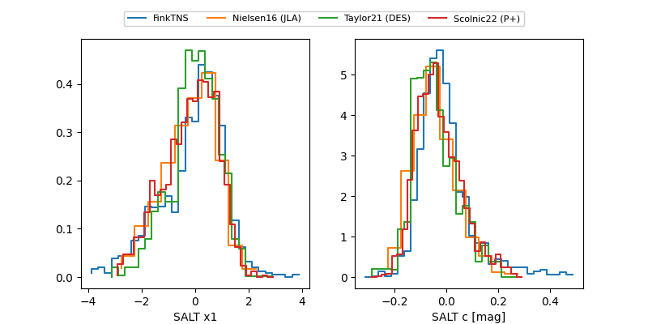

ZTF26aatqqfw
Target ZTF26aatqqfw at 2026-04-28 12:16
Aliases and brokers:
FINK: link
Lasair: link
ALeRCE: link
alt names
ZTF26aatqqfw (ztf,fink_ztf)
Coordinates:
equatorial (ra, dec) = 327.9811,+0.79677
equatorial (HMS+DMS) = 21:51:55.46,+00:47:48.35
galactic (l, b) = (58.3613,-38.62708)
Flags:
Photometry:
last ztfr=19.36
1 ztfr detections
Lightcurve

Visibility


Additional plots
